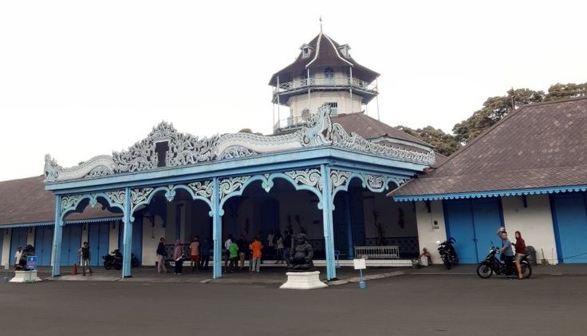

Sejarah

Sejarah dan asal-usul Kota Solo bermula dari sini. Pada tahun 1745, kerajaan di Kartasura dibongkar dan diangkut dalam sebuah prosesi ke Surakarta, di tepi Sungai Bengawan Solo.
Setelah pindah ke Desa Sala, kerajaan Mataram menghadapi perlawanan hebat dari Raden Mas Said dan Pangeran Mangkubumi. Perlawanan Mangkubumi berhenti setelah muncul kesepakatan dalam bentuk Perjanjian Giyanti pada 13 Februari 1755. Dalam perjanjian tersebut menghasilkan keputusan penting berupa, pembagian Kerajaan Mataram menjadi dua, yaitu Kasunanan Surakarta Hadiningrat dan Kasultanan Yogyakarta Hadiningrat. Dengan adanya perjanjian tersebut, kerajaan Mataram berakhir.
Wisata
Sejak dibukanya Jalan Tol Cipularang, kota Bandung telah menjadi tujuan
utama dalam menikmati liburan akhir pekan terutama dari masyarakat yang
berasal dari Jakarta sekitarnya. Selain menjadi kota wisata belanja, kota
Bandung juga dikenal dengan sejumlah besar bangunan lama berarsitektur
peninggalan Belanda.
Kerajaan
Kasunanan Surakarta Hadiningrat adalah sebuah kerajaan di Pulau Jawa bagian tengah yang berdiri pada tahun 1745, yang merupakan penerus dari Kesultanan Mataram yang beribu kota di Kartasura dan selanjutnya berpindah di Surakarta. Pada tahun 1755, sebagai hasil dari Perjanjian Giyanti yang disahkan pada tanggal 13 Februari 1755 antara VOC (Vereenigde Oostindische Compagnie) dengan Pangeran Mangkubumi,[4][5] disepakati bahwa wilayah Mataram dibagi menjadi dua pemerintahan, yaitu Surakarta dan Yogyakarta